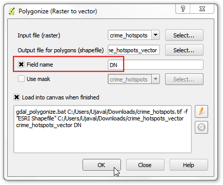
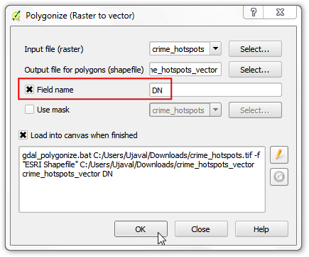

오픈스트리트맵 데이터의 검색과 다운로드¶
경고
This tutorial is now obsolete. A new and updated version is available at 오픈스트리트맵의 검색과 내려받기 (QGIS3)
고품질의 데이터를 얻는 것은 GIS작업에서 필수적이다. 무료이면서 공개적으로 사용할 수 있는 대단한 데이터 자원중의 하나가 `OpenStreetMap(OSM) <http://www.openstreetmap.org/>`_이다. OSM 데이터는 거리, 지역뿐 아니라 빌딩 폴리곤까지 포함되어 있다. GIS포맷상에서 OSM데이터에 접근하는 것이 QGIS에 포함되어 있다. 이 튜토리얼은 QGIS에서 OSM을 검색, 다운로드 그리고 사용하는 과정을 설명하고 있다.
작업 개요¶
OSM 데이터베이스에서 *London*을 검색하고, 도시의 일부분을 찾아보고 선택하고, 모든 펍의 위치를 쉐입파일로 추출한다.
과정¶
작업을 위해 2가지 플러그인을 사용할 것입니다. **OSM Place Search**와 **OpenLayers**플러그인이 설치되어 있는지 확인하십시오. 플러그인 다운로드에 대해서는 플러그인 사용하기 예제를 보십시오.

The OSM Place Search plugin will install itself as a Panel in QGIS. You will see a new panel titled OSM place search… in QGIS.

**OpenLayers**플러그인은 *Plugin*메뉴 아래에 설치됩니다. 이 플러그인은 QGIS에서 다양한 제공자로부터 베이스맵에 접근할 수 있도록 해줍니다. :menuselection:`Plugins –> OpenLayers plugin –> Add OpenStreetMap layer`으로 가서 오픈스트리트맵 베이스맵을 로드시켜 봅시다. 단, QGIS의 버전에 따라 경로가 다를 수 있습니다.

You will see a World map loaded in QGIS.
참고
만약 어떤 데이터도 보이지 않는다면 온라인상태인지 확인하십시오. 베이스맵은 인터넷을 통해 가져오기 때문입니다. 또한 *Pan*툴을 이용해서 캔버스 상에서 지도를 이동시킬 수 있으며 베이스맵을 새로고침하는 기능이 있습니다.

이제 *London*을 찾아보도록 하겠습니다. **OSM Place Search**패널에서 Name contains… 상자에 조회목록을 입력합니다. 그러면 결과들과 적절한 장소가 지도상에서 강조되어 나타납니다. 첫번째 결과인 영국 런던을 선택하고 Zoom 단추를 클릭합니다.

베이스레이어가 움직이고 런던시의 중앙부근이 나타납니다. Zoom 툴을 이용해서 정확한 관심지역을 확대 및 선택합니다. 이 예제에서는 보여지는 것처럼 도시의 중심부를 확대합니다.

이제 맵캔버스위에 표현된 데이터를 다운로드할 수 있습니다. :menuselection:`Vector –> OpenStreetMap –> Downlod data`로 가십시오.

In the Download OpenStreetMap data dialog, choose From map canvas as the Extent. Choose the path and name the output file as
london.osm.

The downloaded file with the
.osmextension is an text file in the OSM XML format. We first need to convert it into a suitable format that is easy to consume in QGIS. Go to .
참고
이제는 OSM Place Search 기능이 필요하지 않습니다. 닫기 단추를 눌러서 주 화면에서 이 기능을 제거할 수 있습니다. 만약 다시 사용하게 된다면 (윈도우 상에서) 로 다시 활성화 시킬 수 있습니다.

Input XML file`로 다운로드된 ``london.osm``를 선택합니다. :guilabel:`Output SpatiaLite DB file`에 ``london.osm.db``라고 입력합니다. :guilabel:`Create connection (SpatiaLite) after import 버튼이 체크되었는지 확인합니다.

이제 마지막 단계입니다. QGIS에서 볼 수 있고 분석할 수 있는 SpatialLite 지오메트리 레이어를 만들 필요가 있습니다. 이것은 :menuselection:`Vector –> OpenStreetMap –> Export topology to SpatialLite`에서 수행합니다.

The
london.osm.dbfile contains all feature types in the OSM database - Points, Lines and Polygons. GIS layers typically contain only one type of feature, so you need to choose one. Since we are interested in point locations of pubs, here you need to choose Point (nodes) as the Export type. You would choose Polylines (open ways) if you wanted to get the road network. Name the Output layer name aslondon_points. GIS data has 2 parts to it - location and attributes. We are also interested in the name of the pub - not just its location, so we need to export that information as well. Click on Load from DB under Exported tags section. This will fetch all attributes from thelondon.osm.dbfile. Check name and amenity tags. See OSM Tags to learn more about what each attribute means. Make sure the Load into canvas when finished is checked, and click OK.

QGIS에 ``london_points``라는 이름의 새로운 레이어가 나타납니다. 주지해야할 것은 이 레이어는 OSM 데이터베이스의 ALL 점들을 포함합니다. 여기서는 펍에 관심이 있으므로 오로지 펍만 선택하여 조회합니다. ``london_points``레이어에서 마우스 오른쪽 클릭하고 :guilabel:`Open Attribute Table`을 선택합니다.

몇 피처들은 :guilabel:`amenity`컬럼 아래 목록에서 **pubs**의 속성값을 갖는 것을 알게됩니다. :guilabel:`Select features using an expression`버튼을 클릭하십시오.


QGIS 캔버스로 되돌아오면 몇개의 점들이 노란색으로 강조된 것을 볼 수 있습니다. 이것들은 조회의 결과입니다. ``london_points``를 마우스 오른쪽 버튼으로 클릭하고 :guilabel:`Save Selection As…`를 선택하십시오.
Save vector layer as… 다이알로그에서 출력 파일명에 ``london_pubs.shp``를 입력합니다. 나머지 모든 옵션을 그대로 두고 Add saved file to map 옵션이 체크되어 있는지 확인합니다. :guilabel:`OK`를 클릭합니다.
 

펍의 쉐입파일의 추출이 이제 완료됩니다. :guilabel:`Identify`툴을 이용하여 아무 포인트나 클릭해서 속성을 볼 수 있습니다.

If you want to give feedback or share your experience with this tutorial, please comment below. (requires GitHub account)